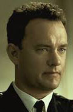
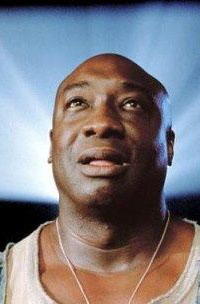

La ligne verte
Synopsis
Paul Edgecomb, pensionnaire centenaire d'une maison de retraite, est hanté par ses souvenirs. Gardien-chef du pénitencier de Cold Mountain, en 1935, en Louisiane, il était chargé de veiller au bon déroulement des exécutions capitales au bloc E (la ligne verte) en s'efforçant d'adoucir les derniers moments des condamnés. Parmi eux se trouvait un colosse du nom de John Coffey, accusé du viol et du meurtre de deux fillettes.
Réalisation
Frank Darabont
Distribution

Tom Hanks

Michael Clarke Duncan
David Morse